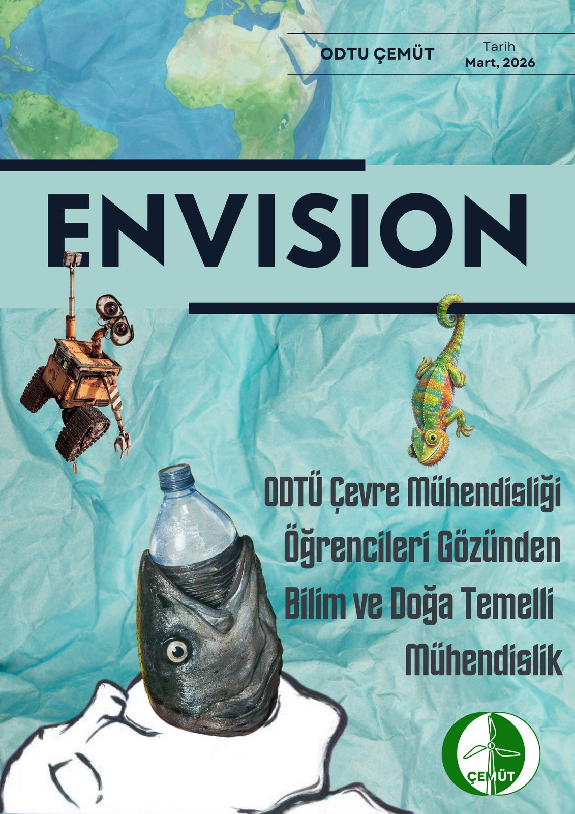
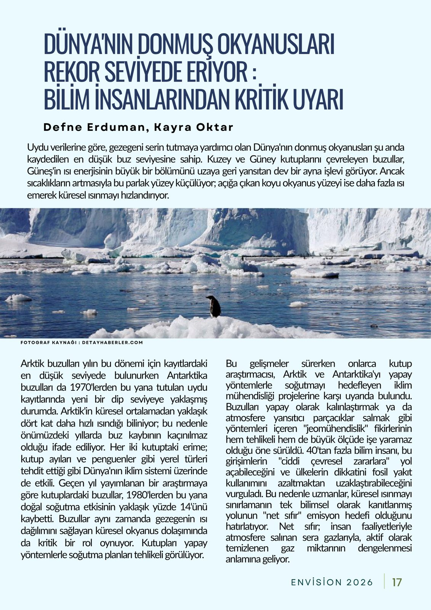
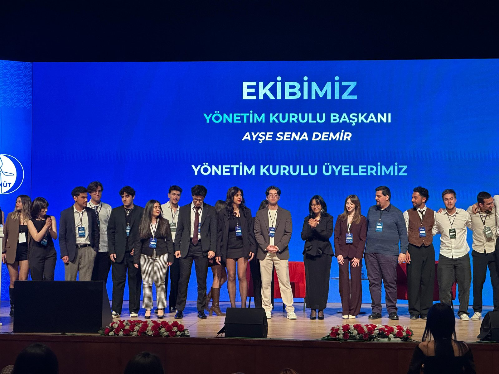
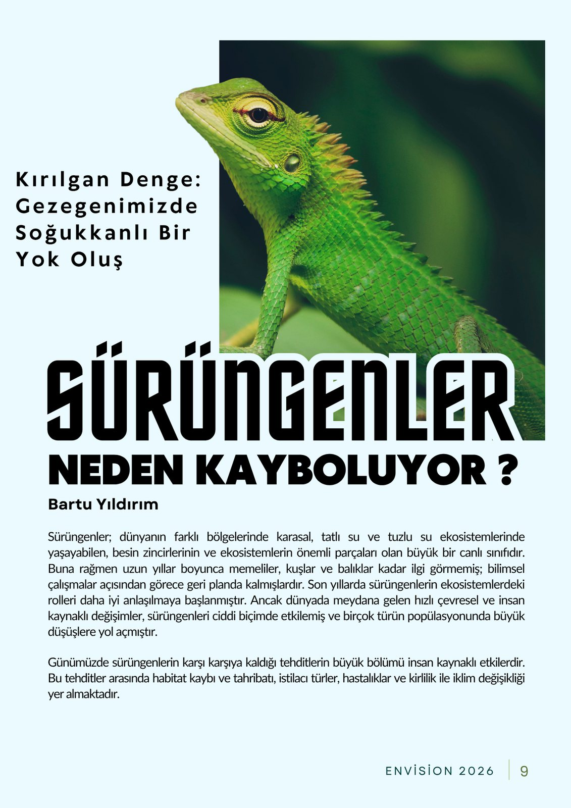

Bülten komitemizin editörlüğünde; çevre mühendisliği öğrencileri tarafından kaleme alınan sektör analizleri, saha notları ve topluluğumuzdan en güncel haberler.
Topluluğumuzun yeni görsel kimliğini tanıttık. ODTÜ'nün simgesi Bilim Ağacı'ndan esinlenen yeni logomuz; dünyayı, çevreyi ve bilimi tek bir formda birleştiriyor. Peki neden değiştirdik, kendimize hangi hedefleri koyduk ve bu işaretin arkasındaki hikâye ne? Dönüşümün tüm detayları bu yazıda.

Doğa, bilim ve sürdürülebilirlik odaklı içerikleriyle dikkat çeken Envision dergimizin yeni sayısı çıktı! Çevre mühendisliği vizyonumuzu, güncel tartışmaları ve doğaya dair merak ettiklerinizi sayfalarına taşıdık. Basılı kopyalar için bölümümüzdeki Topluluk Odamıza uğrayabilirsiniz.

Dünyanın donmuş okyanusları rekor seviyede eriyor ve bilim insanları bu durumun küresel iklim sistemi üzerindeki kritik etkilerine karşı uyarıda bulunuyor. Buzulların erimesinin yarattığı tehlikeleri, jeomühendislik projelerine karşı bilim camiasının çekincelerini ve gezegenimizi korumanın tek bilimsel yolu olan "net sıfır" hedefini keşfedin.

Türkiye'nin ilk yapay zeka destekli sürdürülebilirlik zirvesinden öne çıkan vizyoner konuşmalar, panel özetleri ve alınan kararlar.

Ekosistemlerin sessiz kahramanları sürüngenler, günümüzde insan kaynaklı pek çok çevresel tehditle karşı karşıya. Habitat kaybından iklim değişikliğine kadar uzanan bu sessiz yok oluşun nedenlerini ve ekosistem üzerindeki kritik etkilerini keşfedin.